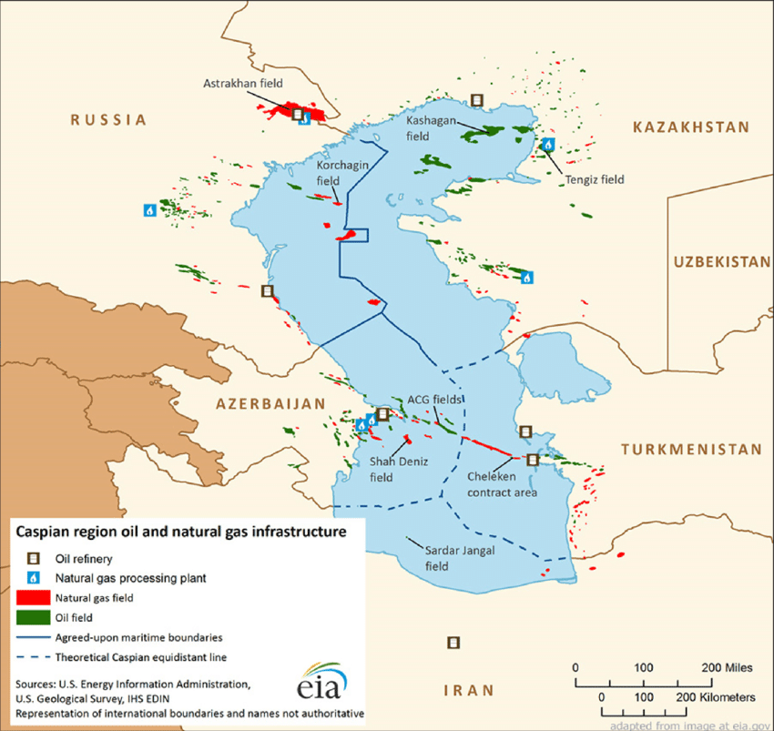

The Caspian sea is a lake bordered by Russia, Iran, Kazakhstan, Turkmenistan, and Azerbaijan. The lake is situated between Central Asia and Eastern Europe.
Some of the Nations bordering the Caspian sea consider it to be a shared lake while others view it as viable to the UNCLOS (United Nations Convention on the law of the sea) United Nations agreement. The Caspian sea has abundant oil and natural gas reserves, as well as the sturgeon fish, the fish that lays caviar.
The Caspian sea is divided into three zones, territorial waters, fishery zones, and "Common maritime space" or International waters. The territorial waters extend 15 nautical miles or 27 kilometres, with the fishery zones a further 10 nautical miles or 18 kilometres. The countries have full sovereignty over their territorial waters, and can exploit and extract any materials found there. In the fishery zones they can only harvest fish and any marine life, mostly of the sturgeon kind. The international waters cannot be exploited by any country and takes up the remainder of the sea.